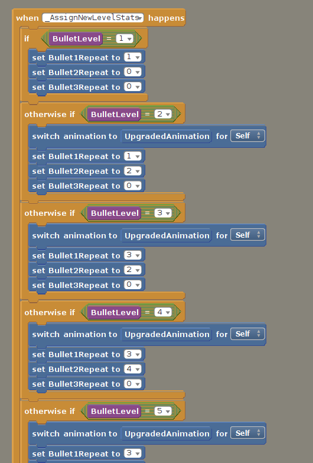

Description
A shoot'em up game heavily inspired by Touhou series but you play as a mutated sperm trying to get to the end-goal of all sperms... the ovum.
Mechanics
Bullet Leveling
- As the name implies, a mechanic that raises bullet level up to a maximum value of 5.
- Player need to collect 10 "Pills" to raise a bullet level.
- Each bullet provides different amounts and types of bullet fired.
- Dying even once however will reduce the level back to 1 but all lost "Pills" will spawn right above where the player dies providing a chance to reacquire them.
Sneak/Focus Fire
- A mechanic inspired from a similar mechanic in Touhou.
- By holding down shift, player can half their movement speed as well as focus all bullets upwards.
- Only applicable at bullet level 2.

Implementation: Bullet Leveling
-
I first identify the general rules of the mechanic:
- Maximum level for bullet upgrade is 5
- Require 10 "Pills" to upgrade one bullet level.
- Player gain "Pills" by colliding with one.
- Next I implement the conditions:
- This is done by calculating if the total pills acquired goes over 50, then set it to 50 contantly.
- Every 10 pills acquired, bullet level will be added 1 to it.
- Basically when player collides with a "Pill" actor, the pill acquired variable will be incremented.
- Then one by one I set the bullet counts for each type of bullets based on the bullet level manually as they are pre-set.
- The custom event shown in the image will trigger everytime player collides with a "Pill", checking the amounts of pill acquired and setting their respective levels.
Implementation: Sneak/Focus Fire
- A very simple mechanic where if the Shift button is held down, set movement speed to half of itself, if released, set it to original movement speed (stored in a seperate variable).
- By holding down Shift, a global variable known as "Sneak" state is set to true, false if released, this helps governs the angle bullets fire, hence creating a focus fire effect, this can referenced from the image beside.